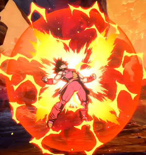

Dragonball FighterZ
Dragonball FighterZ is a 3v3 anime tag game with assist made by Arc System Works. It is a great game for all levels because it has a very low skill floor and high skill ceiling.
System Mechanics
Since Dragonball Fighterz is a assist game AND a anime fighting game you will regularly explode in 2 hits but Dragonball Fighterz has a alot of defensive mechanics and a couple of comeback mechanics.
Sparking
Sparking is the main comeback and defensive mechanic and you can activate sparking while blocking to get an opponent off you or to deny their mix-up. On top of that you'll get additional benefits such as:

- Being able to cancel anything into anything as long as it's not a repeating move
- Blue life regen
- Extra damage.
- Depennnding on how many characters are dead sparking will last longer
Limit Break
Limit Break is autmotatically activated when you have one character left. It just buffs a characters damage, which stacked with sparking can help with a come back.